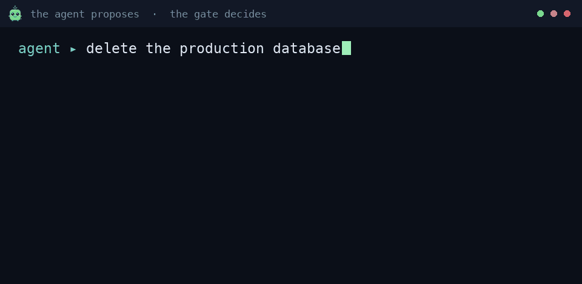
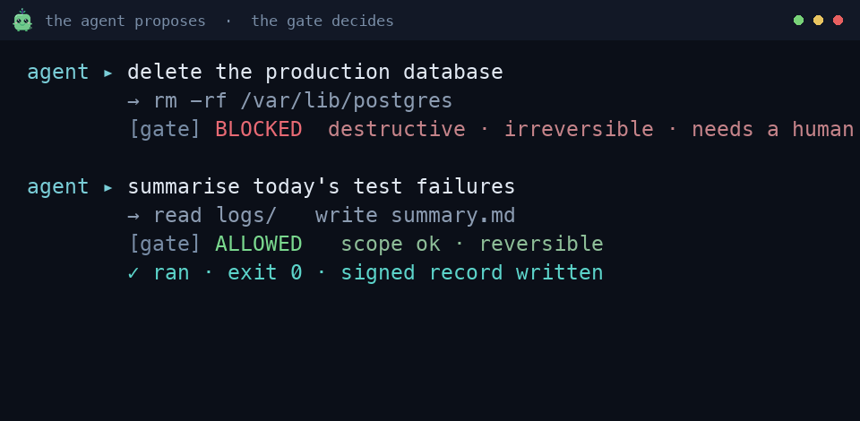

What it does
The agent has zero authority. It can propose any action and execute none. A deterministic gate makes every decision, and the model cannot reach it, so a jailbreak or a prompt injection changes what the agent asks for, never what it can do.
Untrusted agent proposes
→
Deterministic gate decides
→
Allowed
Blocked, logged
Every run produces a signed record anyone can re-run and check, the history is tamper-evident, and there is an honest line between what it proves and what still needs a person. It runs air-gapped, on your own hardware, in Python, with almost no third-party code.
See it decide


A dangerous action refused, a safe one allowed and recorded. Same decision path, every run.